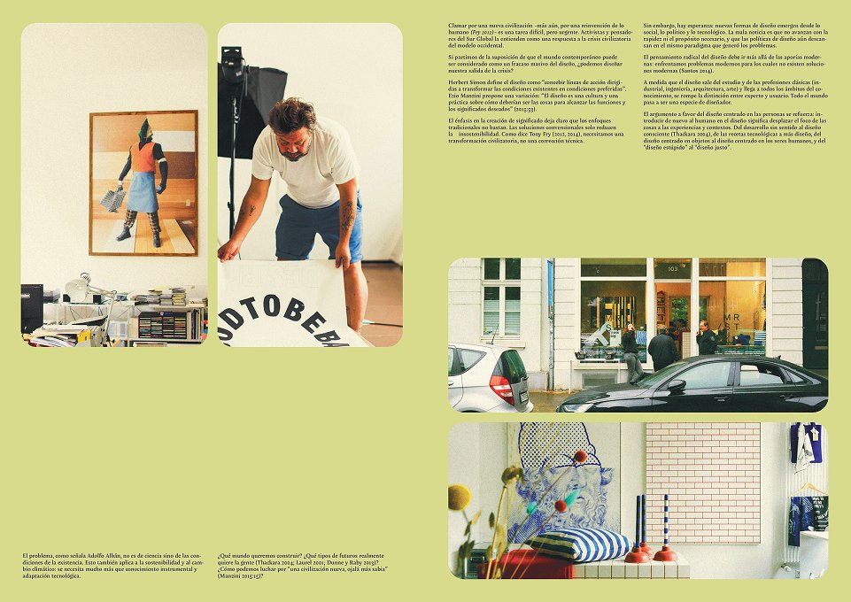
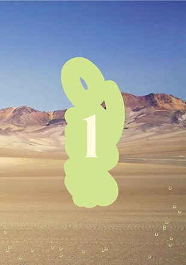
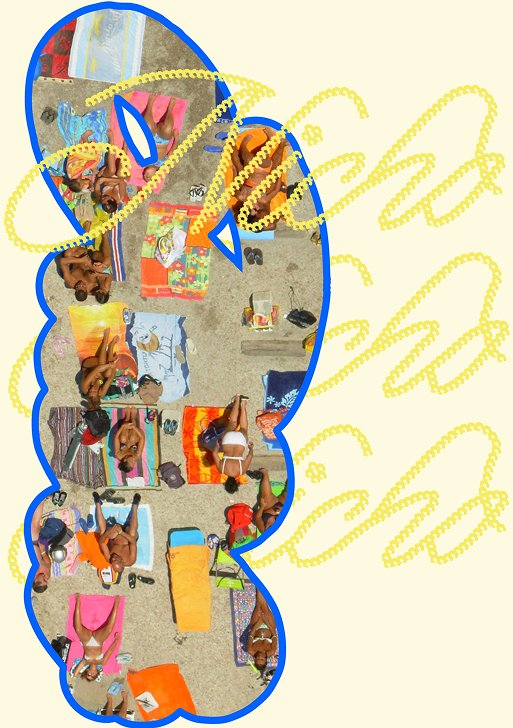
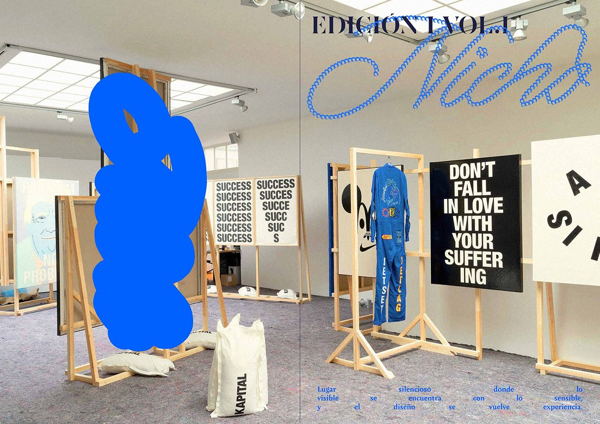
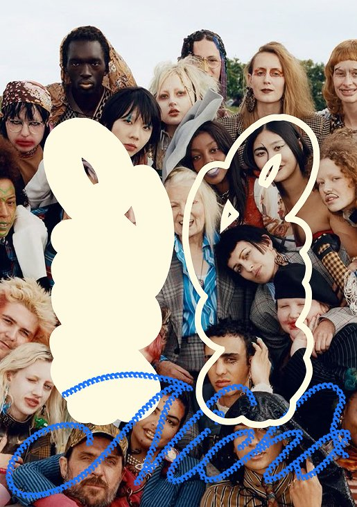
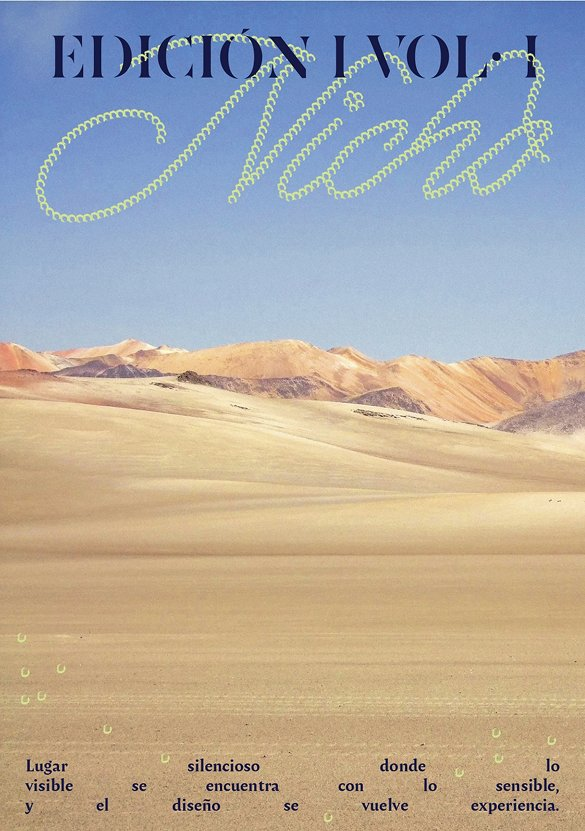
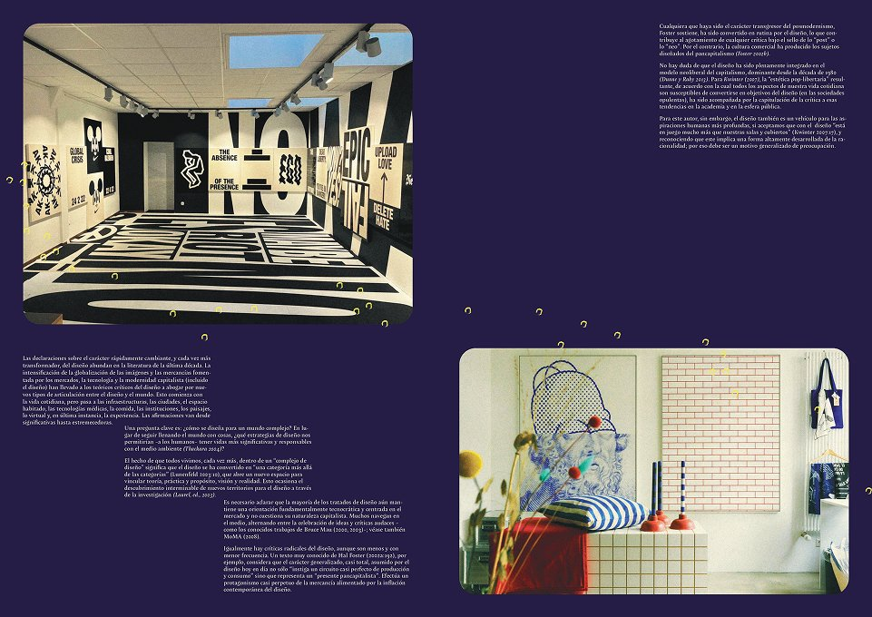
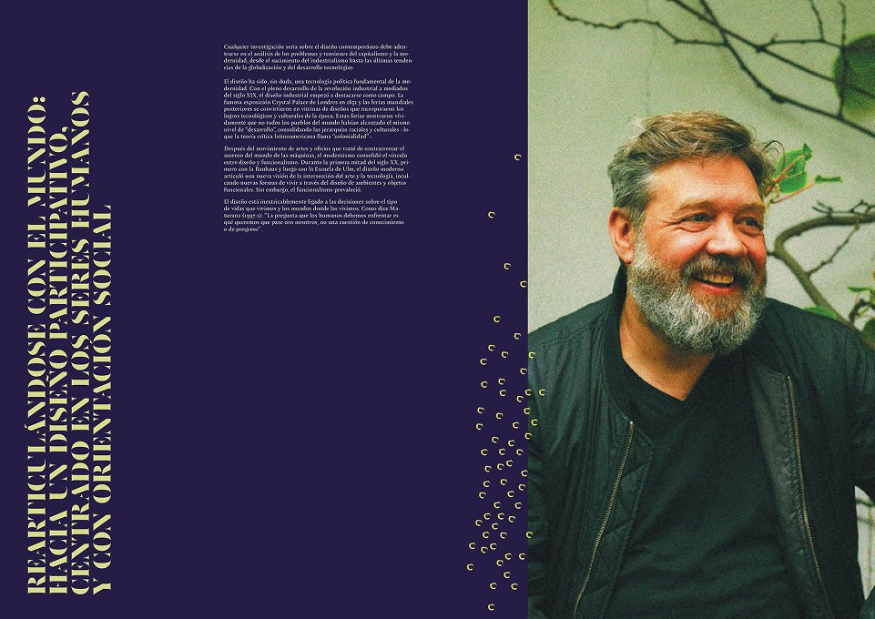
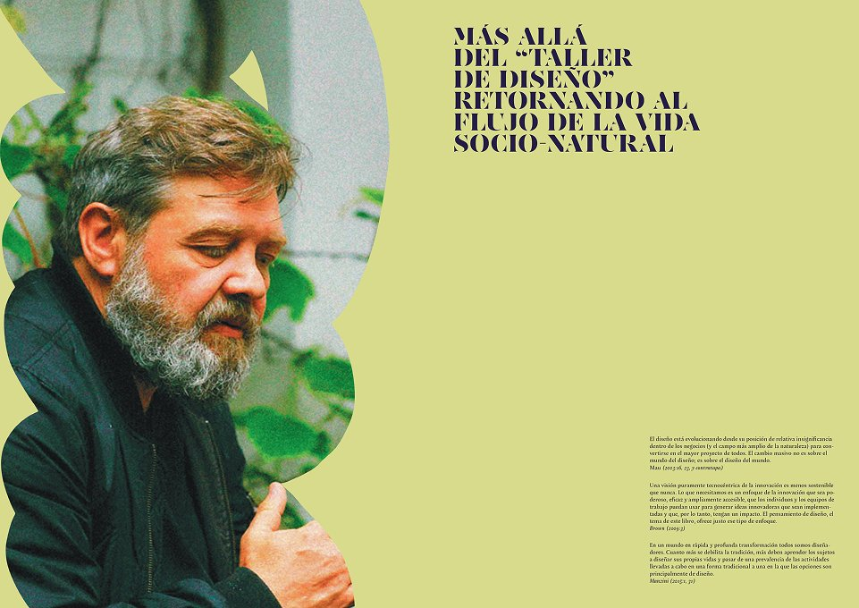

Nicho
Revista
Este proyecto consiste en el desarrollo de la identidad visual de una revista dedicada al diseño. A partir de la definición de su concepto editorial y público objetivo, se construyó un sistema gráfico que busca representar su personalidad y línea temática. El proceso contempla la exploración de recursos visuales, tipográficos y cromáticos, con el propósito de crear una identidad coherente, reconocible y atractiva, capaz de transmitir el carácter de la publicación y diferenciarla dentro del mundo del diseño.
“El diseño trasciende cuando puede ser habitado e
interpretado por cada persona, adaptándose a contextos
como historias y maneras de ver el mundo”
TrascendenciaPerdura en el tiempo, no tiene dirección y es un acto de ir más allá de los límites.
HabitarEl diseño habita en cada persona y su contexto, haciéndolo propio.
InterpretarEl usuario le da su propia identidad al diseño, lo condiciona y le da su propio significado.









Proyecto colaborativo
con Lucía Cárdenas y Karoline Muñoz